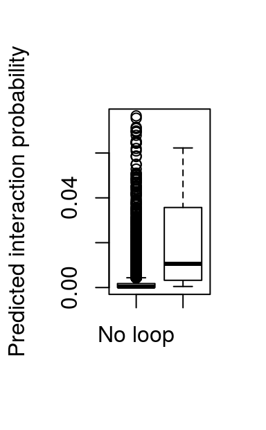

Abstract
Chromatin looping is an important feature of eukaryotic genomes and can bring regulatory sequences, such as enhancers or transcription factor binding sites, in close physical proximity of regulated target genes. Here, we provide sevenC, a tool that uses protein binding signals from ChIP-seq and sequence motif information to predict chromatin looping events. Cross-linking of proteins that bind close to loop anchors result in ChIP-seq signals at both anchor loci. These signals are used at CTCF motif pairs together with their distance and orientation to each other to predict whether they interact or not. The resulting chromatin loops can be used to associate enhancers or transcription factor binding sites (e.g. ChIP-seq peaks) to regulated target genes.
Gene expression is regulated by binding of transcription factors (TF) to genomic DNA. However, many binding sites are in distal regulatory region, such as enhancers, that are hundreds of kilo bases apart of genes. These regulatory regions can physically interact with promoters of regulated genes by chromatin looping interactions. These looping interaction can be measured genome wide by chromatin conformation capture techniques such as Hi-C or ChIA-PET (Rao et al. 2014, Tang et al. (2015)). Despite many exciting insights into the three-dimensional organization of genomes, these experimental methods are not only elaborate and expansive but also require require lots of sample material (in case of ChIA-PET) or have limited resolution of 5-40 kb (in case of Hi-C).
In contrast, the binding sites of TFs can be detected genome-wide by ChIP-seq experiment which are available for hundreds of TFs in many cell type and conditions. However, classical analysis of ChIP-seq gives only the direct binding sites of targeted TFs (peaks) and it is not trivial to associate them to the regulated gene without chromatin looping information.
Therefore, we provide a computational method to predict chromatin interactions from only genomic sequence features and ChIP-seq data. The predicted looping interactions can be used to associate TF binding sites (ChIP-seq peaks) or enhancers to regulated genes and thereby improve functional downstream analysis on the level of genes.
In this vignette, we show how to use the R package sevenC to predict chromatin looping interactions between CTCF motifs by using only ChIP-seq data form a single experiment. Furthermore, we show how to train the the prediction model using custom data.
Here we show how to use the sevenC package with default options to predict chromatin looping interactions among CTCF motif locations on chromosome 22. As input only a single bigWig file with example ChIP-seq data is used.
library(sevenC)
# load provided CTCF motifs in human genome
motifs <- motif.hg19.CTCF.chr22
# get motifs pairs
gi <- prepareCisPairs(motifs, scoreColname = "sig")# use example ChIP-seq bigWig file
bigWigFile <- system.file("extdata", "GM12878_Stat1.chr22_1-18000000.bigWig",
package = "sevenC")
# add ChIP-seq coverage and compute correaltion at motif pairs
gi <- addCor(gi, bigWigFile)# predict looping interactions among all motif pairs
loops <- predLoops(gi)Here we show in more detail each step of the loop prediction process. Again, we want to predict chromatin looping interactions among CTCF motif locations on chromosome 22. As input only a single bigWig file is used with coverage from a STAT1 ChIP-seq experiment in human GM12878 cells.
First, we need to prepare CTCF motif pairs as candidate anchors for chromatin loop interactions. We use CTCF motif hits in human chromosome 22 as provide by sevenC package. In general, any CTCF motif pairs can be used if provided as GRanges object. To use the motif hit score, the motif data should contain a -log10 transformed p-value describing the significance of each motif hit. Here, we use CTCF motif hits from RSAT matrix-scan on chromosome 22 as provided as motif.hg19.CTCF.chr22 in the sevenC package. For more information on the motif data set, see ?motif.hg19.CTCF.
library(sevenC)
# load provided CTCF motifs
motifs <- motif.hg19.CTCF.chr22The CTCF motif are represented as GRanges object from the GenomicRanges package. There are 696 CTCF motif locations on chromosome 22. The genome assembly is hg19. Four metadata columns show motif match similarity as weight score, p-value, log transformed p-value and significance score. Use help(motif.hg19.CTCF) to get more information on the motif dataset.
To predict loops we need the ChIP-seq signals at all motif sites. Therefore, we read an example bigWig file with ChIP-seq signals1.
An example file with only data on a subset of chromosome 22 is provide as part of the sevenC package. The full file can be downloaded from ENCODE (Dunham et al. 2012) here. The file contains for each position in the genome the log-fold-change of ChIP-seq signals versus input control.
# use example ChIP-seq bigWig file
bigWigFile <- system.file("extdata", "GM12878_Stat1.chr22_1-18000000.bigWig",
package = "sevenC")We add ChIP-seq signals to all motifs in a window of 1000 bp using the function addCovToGR() as follows
# read ChIP-seq coverage
motifs <- addCovToGR(motifs, bigWigFile)This adds a new metadata column to motifs holding a NumericList with ChIP-seq signals for each motif location.
motifs$chip## NumericList of length 696
## [["chr22"]] 1 1 1 1 1 1 1 1 1 1 1 1 1 1 1 ... 0 0 0 0 0 0 0 0 0 0 0 0 0 0
## [["chr22"]] 0 0 0 0 0 0 0 0 0 0 0 0 0 0 0 ... 4 4 4 4 4 4 4 4 4 4 4 4 4 4
## [["chr22"]] 0 0 0 0 0 0 0 0 0 0 0 0 0 0 0 ... 0 0 0 0 0 0 0 0 0 0 0 0 0 0
## [["chr22"]] 1 1 1 1 1 1 1 1 1 1 1 1 1 1 1 ... 2 2 2 2 2 2 2 2 2 2 2 2 2 2
## [["chr22"]] 2 2 2 2 2 2 2 2 2 2 2 2 2 2 2 ... 2 2 2 2 2 2 2 2 2 2 2 2 2 2
## [["chr22"]] 4 4 4 4 4 4 4 4 4 4 4 4 4 4 4 ... 3 3 3 3 3 3 3 3 3 3 3 3 3 3
## [["chr22"]] 2 2 2 2 2 2 2 2 2 2 2 2 2 2 2 ... 2 2 2 2 2 2 2 2 2 3 3 3 3 3
## [["chr22"]] 2 2 2 2 2 2 2 2 2 2 2 2 ... 12 12 12 12 12 12 12 12 12 12 12
## [["chr22"]] 15 15 15 15 15 15 15 15 15 15 15 15 ... 8 8 8 8 8 8 8 8 8 8 8
## [["chr22"]] 0 0 0 0 0 0 0 0 0 0 0 0 0 0 0 ... 0 0 0 0 0 0 0 0 0 0 0 0 0 0
## ...
## <686 more elements>Now we build a dataset with all pairs of CTCF motif within 1 Mb and annotate it with distance, motif orientation, and motif score.
gi <- prepareCisPairs(motifs, maxDist = 10^6, scoreColname = "sig")
gi## StrictGInteractions object with 15586 interactions and 5 metadata columns:
## seqnames1 ranges1 seqnames2
## <Rle> <IRanges> <Rle>
## [1] chr22 [16124116, 16124134] --- chr22
## [2] chr22 [16124116, 16124134] --- chr22
## [3] chr22 [16124116, 16124134] --- chr22
## [4] chr22 [16124116, 16124134] --- chr22
## [5] chr22 [16124116, 16124134] --- chr22
## ... ... ... ... ...
## [15582] chr22 [50964897, 50964915] --- chr22
## [15583] chr22 [50964897, 50964915] --- chr22
## [15584] chr22 [51058993, 51059011] --- chr22
## [15585] chr22 [51058993, 51059011] --- chr22
## [15586] chr22 [51135224, 51135242] --- chr22
## ranges2 | dist strandOrientation score_1
## <IRanges> | <integer> <character> <numeric>
## [1] [16201463, 16201481] | 77347 forward 7.032
## [2] [16335406, 16335424] | 211290 forward 7.032
## [3] [16097012, 16097030] | 27104 divergent 7.032
## [4] [16405612, 16405630] | 281496 convergent 7.032
## [5] [17083197, 17083215] | 959081 convergent 7.032
## ... ... . ... ... ...
## [15582] [51135224, 51135242] | 170327 reverse 8.222
## [15583] [51158780, 51158798] | 193883 reverse 8.222
## [15584] [51135224, 51135242] | 76231 reverse 6.244
## [15585] [51158780, 51158798] | 99787 reverse 6.244
## [15586] [51158780, 51158798] | 23556 reverse 6.201
## score_2 score_min
## <numeric> <numeric>
## [1] 6.409 6.409
## [2] 6.167 6.167
## [3] 6.244 6.244
## [4] 6.721 6.721
## [5] 6.292 6.292
## ... ... ...
## [15582] 6.201 6.201
## [15583] 7.174 7.174
## [15584] 6.201 6.201
## [15585] 7.174 6.244
## [15586] 7.174 6.201
## -------
## regions: 696 ranges and 6 metadata columns
## seqinfo: 93 sequences (1 circular) from hg19 genomeThe function prepareCisPairs() returns a GInteractoin object from the InteractonSet package, representing all motif pairs within the defined distance. Metadata columns of the GInteractoin object hold the genomic distance between motifs in bp (dist), the orientation of motifs (strandOrientation), and motif score as -log10 of the motif hit p-value (score_1, score_2, and score_min). Note, that the function prepareCisPairs() is wrapper for three individual functions that performs each step separately and allow more options. First, getCisPairs() is used to builds the GInteractoin object. Than addStrandCombination() adds the four possible strand combinations of motifs pairs. Finally, addMotifScore() adds the minimum motif score for each pair. These features are later used as variables for predictions.
Now, we compute the correlation of ChIP-seq signals for all motif pairs across positions around motif centers. Essentially, for two motifs the corresponding ChIP-seq signal vectors that were added to motifs before, are compared by Pearson correlation. High correlation of ChIP-seq signals at two motifs indicate a similar ChIP-seq coverage profile at the two motifs. This in turn is characteristic for interacting motifs, where ChIP signals are found on both side with a similar distance to motif centers. The correlation coefficient is added as additional metadata column to gi.
# add ChIP-seq coverage and compute correaltion at motif pairs
gi <- addCovCor(gi)Now we can predict chromatin loops integrating the ChIP-seq correlation with other genomic features in a logistic regression model.
loops <- predLoops(gi)
loops## StrictGInteractions object with 8 interactions and 7 metadata columns:
## seqnames1 ranges1 seqnames2 ranges2 |
## <Rle> <IRanges> <Rle> <IRanges> |
## [1] chr22 [17398482, 17398500] --- chr22 [17539262, 17539280] |
## [2] chr22 [17600547, 17600565] --- chr22 [17601508, 17601526] |
## [3] chr22 [17600547, 17600565] --- chr22 [17601546, 17601564] |
## [4] chr22 [17600547, 17600565] --- chr22 [17652202, 17652220] |
## [5] chr22 [17600838, 17600856] --- chr22 [17601546, 17601564] |
## [6] chr22 [17601508, 17601526] --- chr22 [17652202, 17652220] |
## [7] chr22 [17601508, 17601526] --- chr22 [17652850, 17652868] |
## [8] chr22 [17652500, 17652518] --- chr22 [17652850, 17652868] |
## dist strandOrientation score_1 score_2 score_min cor_chip
## <integer> <character> <numeric> <numeric> <numeric> <numeric>
## [1] 140780 convergent 6.009 6.167 6.009 0.7902839
## [2] 961 forward 7.678 7.824 7.678 0.4792622
## [3] 999 convergent 7.678 6.456 6.456 -0.1316063
## [4] 51655 convergent 7.678 6.201 6.201 0.7836006
## [5] 708 convergent 6.201 6.456 6.201 0.4247492
## [6] 50694 convergent 7.824 6.201 6.201 0.3831105
## [7] 51342 convergent 7.824 10.796 7.824 -0.3702664
## [8] 350 convergent 8.509 10.796 8.509 0.8631771
## pred
## <numeric>
## [1] 0.4010825
## [2] 0.2784833
## [3] 0.1957508
## [4] 0.5188280
## [5] 0.3933609
## [6] 0.3251221
## [7] 0.2099542
## [8] 0.8555726
## -------
## regions: 696 ranges and 6 metadata columns
## seqinfo: 93 sequences (1 circular) from hg19 genomeThis result in a subset of motif pairs that are predicted to interact. The interactions are annotated with ChIP-seq correlation in column chip. The column pred holds the predicted interaction probability according to the logistic regression model.
Note, that without specifying further options, the function predLoops() uses a default model that was optimized for several transcription factor ChIP-seq data sets by using experimental chromatin loops from Hi-C and ChIA-PET for validations. However, users can specify custom features using the formular argument and provide custom parameters using the betasargument. Furthermore, per default the predLoops() function report only looping interactions that mead a minimal prediction score threshold. This can be modified using the cutoff argument.
Predicted loops are represented as GInteraction and can therefore be used easily for downstream analysis with functions from the InteractonSet package. For example linking two sets of regions (like ChIP-seq peaks and genes) can be done using the linkOverlaps function. See the vignette of the InteractonSet package for more details and examples.
Since looping interactions are stored as GInteraction objects, they can be exported as BED-PE files using functions from GenomicInteractions package.
library(GenomicInteractions)## Warning: replacing previous import 'BiocGenerics::Position' by
## 'ggplot2::Position' when loading 'GenomicInteractions'## Warning: replacing previous import 'BiocGenerics::sd' by 'stats::sd' when
## loading 'GenomicInteractions'# export to output file
export.bedpe(loops, "loop_interactions.bedpe", score = "pred")Here, we show how to use sevenC to build and train a logistic regression model for loop prediction.
First, we need to build the pairs of motifs as candidate and add the ChIP-seq data as shown above.
# load provided CTCF motifs
motifs <- motif.hg19.CTCF.chr22
# use example ChIP-seq coverage file
bigWigFile <- system.file("extdata", "GM12878_Stat1.chr22_1-18000000.bigWig",
package = "sevenC")
# add ChIP-seq coverage
motifs <- addCovToGR(motifs, bigWigFile)
# build motif pairs
gi <- prepareCisPairs(motifs, maxDist = 10^6, scoreColname = "sig")
# add correaltion of ChIP-signal
gi <- addCovCor(gi)We need to label true looping interactions by using experimental data of chromatin interactions. Here, we use loops from high resolution Hi-C experiments in human GM12878 cells (Rao et al. 2014). An example file with loops on chromosome 22 is provided with the sevenC package and the function parseLoopsRao() reads loops in the format provided by Rao et al. and returns a GInteraction object.
# parse known loops
knownLoopFile <- system.file("extdata",
"GM12878_HiCCUPS.chr22_1-18000000.loop.txt", package = "sevenC")
knownLoops <- parseLoopsRao(knownLoopFile)We can add a new metadata column to the motif pairs gi, indicating whether the pair is interacting in the experimental data using the function addInteractionSupport().
# add known loops
gi <- addInteractionSupport(gi, knownLoops)The experimental support is added as factor with levels "Loop" and "No loop" as metadata column named loop. The column name can be modified using the colname argument.
We can use the glm() function in R to fit a logistic regression model in which the loop column is the dependent variable and the ChIP-seq correlation, distance, and strand orientation are the predictors.
fit <- glm(
formula = loop ~ cor_chip + dist + strandOrientation,
data = mcols(gi),
family = binomial()
)Now, we can use this model to add predicted looping probabilities.
# add predict loops
gi <- predLoops(
gi,
formula = loop ~ cor_chip + dist + strandOrientation,
betas = coef(fit),
cutoff = NULL
)Here, we have to use the same formula as argument as in the model fitting step above. The betas argument takes the coefficients of the logistic regression model. Finally, the argument cutoff = NULL ensures that no filtering is done and all input candidates are reported. The prediction score is added as a new metadata column to gi.
gi ## StrictGInteractions object with 15586 interactions and 8 metadata columns:
## seqnames1 ranges1 seqnames2
## <Rle> <IRanges> <Rle>
## [1] chr22 [16124116, 16124134] --- chr22
## [2] chr22 [16124116, 16124134] --- chr22
## [3] chr22 [16124116, 16124134] --- chr22
## [4] chr22 [16124116, 16124134] --- chr22
## [5] chr22 [16124116, 16124134] --- chr22
## ... ... ... ... ...
## [15582] chr22 [50964897, 50964915] --- chr22
## [15583] chr22 [50964897, 50964915] --- chr22
## [15584] chr22 [51058993, 51059011] --- chr22
## [15585] chr22 [51058993, 51059011] --- chr22
## [15586] chr22 [51135224, 51135242] --- chr22
## ranges2 | dist strandOrientation score_1
## <IRanges> | <integer> <character> <numeric>
## [1] [16201463, 16201481] | 77347 forward 7.032
## [2] [16335406, 16335424] | 211290 forward 7.032
## [3] [16097012, 16097030] | 27104 divergent 7.032
## [4] [16405612, 16405630] | 281496 convergent 7.032
## [5] [17083197, 17083215] | 959081 convergent 7.032
## ... ... . ... ... ...
## [15582] [51135224, 51135242] | 170327 reverse 8.222
## [15583] [51158780, 51158798] | 193883 reverse 8.222
## [15584] [51135224, 51135242] | 76231 reverse 6.244
## [15585] [51158780, 51158798] | 99787 reverse 6.244
## [15586] [51158780, 51158798] | 23556 reverse 6.201
## score_2 score_min cor_chip loop pred
## <numeric> <numeric> <numeric> <factor> <numeric>
## [1] 6.409 6.409 -0.1371194 No loop 9.782302e-10
## [2] 6.167 6.167 <NA> No loop <NA>
## [3] 6.244 6.244 -0.2117460 No loop 6.638165e-10
## [4] 6.721 6.721 <NA> No loop <NA>
## [5] 6.292 6.292 0.7153757 No loop 2.363332e-01
## ... ... ... ... ... ...
## [15582] 6.201 6.201 <NA> No loop <NA>
## [15583] 7.174 7.174 <NA> No loop <NA>
## [15584] 6.201 6.201 <NA> No loop <NA>
## [15585] 7.174 6.244 <NA> No loop <NA>
## [15586] 7.174 6.201 <NA> No loop <NA>
## -------
## regions: 696 ranges and 6 metadata columns
## seqinfo: 93 sequences (1 circular) from hg19 genomeAs a very simple validation we can now compare the prediction score for looping and non-looping motif pairs using a boxplot.
boxplot(gi$pred ~ gi$loop,
ylab = "Predicted interaction probability")
This shows higher prediction scores for truly looping motif pairs. However, this is an insufficient evaluation of prediction performance, since the prediction score is evaluated on the same data as it was trained. A more detailed evaluation of prediction performance using cross-validation and different cell types is soon available in the sevenC paper.
Dunham, Ian, Anshul Kundaje, Shelley F Aldred, Patrick J Collins, Carrie a Davis, Francis Doyle, Charles B Epstein, et al. 2012. “An integrated encyclopedia of DNA elements in the human genome.” Nature 489 (7414): 57–74. doi:10.1038/nature11247.
Rao, Suhas S P, Miriam H Huntley, Neva C Durand, Elena K Stamenova, Ivan D Bochkov, James T Robinson, Adrian L Sanborn, et al. 2014. “A 3D map of the human genome at kilobase resolution reveals principles of chromatin looping.” Cell 159 (7). Elsevier Inc.: 1665–80. doi:10.1016/j.cell.2014.11.021.
Tang, Zhonghui, Oscar Junhong Luo, Xingwang Li, Meizhen Zheng, Jacqueline Jufen Zhu, Przemyslaw Szalaj, Pawel Trzaskoma, et al. 2015. “CTCF-Mediated Human 3D Genome Architecture Reveals Chromatin Topology for Transcription.” Cell. Elsevier Inc., 1–17. doi:10.1016/j.cell.2015.11.024.
Note, reading of bigWig files is currently not supported on Windows. See help(rtracklayer::import.bw) for more information. Users on Windows need to add ChIP-seq signals as NumierList by other means.↩